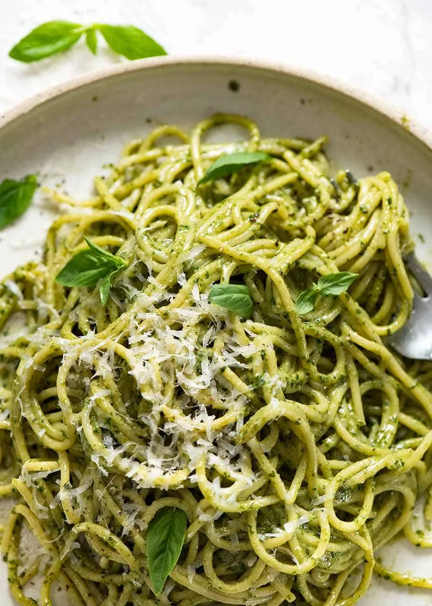

Make a quick, vibrant pesto pasta in about 15 to 20 minutes using simple ingredients and the secret trick of starchy pasta water to make a silky sauce.
Bring a large pot of heavily salted water to a rolling boil. Add your pasta and cook it until al dente (often 1 minute less than the package instructions).
Just before you drain the pasta, scoop out about 1 cup of the starchy cooking water.
Drain the pasta in a colander. Transfer it to a large, room-temperature bowl (avoid a hot pot so you do not cook or dull the basil).
Add your pesto and about 1/4 to 1/2 cup of the reserved pasta water to the pasta. Toss vigorously so the oil and starch bind together into a glossy, slick sauce instead of pooling at the bottom. Add a splash more water if it looks dry.
Plate immediately, top with extra grated Parmesan, fresh basil leaves, and black pepper.